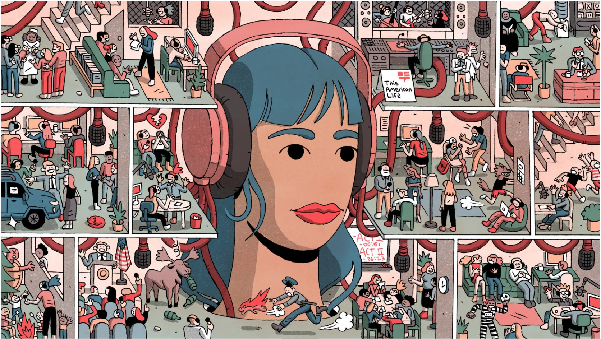
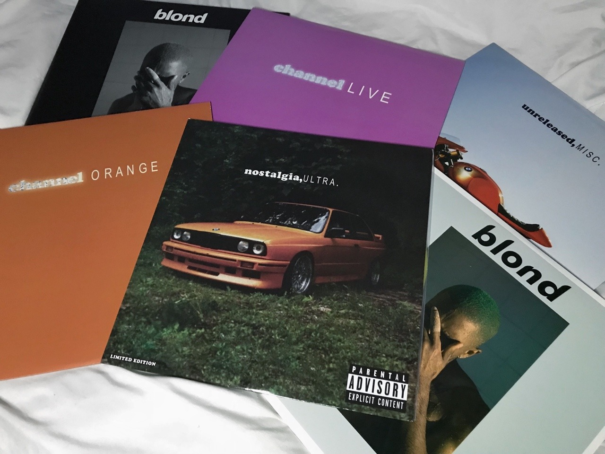

Where to begin? Literally! I’ve always been into the idea of podcasts, but I could never get into podcasts because of how “all over the place” the topics of any given podcast can seem. My goal for this project was to determine what are the general topics that “This American Life” podcast talks about, and to create an app that can recommend other podcasts that seem to talk about similar things.

Frank Ocean is one of the most inspirational modern day song writers in my view, and any fan would agree and tell you that “Blonde” is where you can find his best writing. As a songwriter, I find that the hardest part of the process is in fact developing quality lyrics. In this NLP project, the goal was to investigate what topics Frank Ocean sings/raps about across his entire discography, then more individually on his album “Blonde,” in order to hopefully foster inspiration in my writing and to see the “topical recipe” behind his masterful songs.